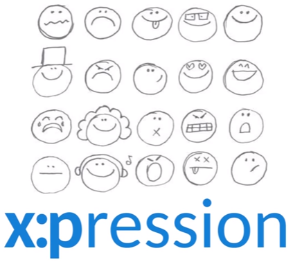

Eduardo Rodrigues
Address
319, Mário Alvares Pereira de Lira Avenue
Cordeiro
ZIP Code: 50721-430
Recife/PE - Brazil
Phone +55 81 9 9617-4140
Contact
Email: ehmr@cin.ufpe.br
Undergraduate student in Computer Science at the Informatics Center of Federal University of Pernambuco (CIn - UFPE) and researcher at Voxar Labs under the supervision of Prof. Veronica Teichrieb. My research include the study of mixed reality, natural interaction, 3D interaction, image processing, computer vision, multi-target tracking and 3D rendering. I am also interested in photo-realistic rendering and machine learning.
Interests
- Mixed Reality
- Natural Interaction
- 3D Interaction
- Computer Vision
- Multi-target Tracking
- Games
- Challenges
Technical Skills
Programming Languages
- C++ (Experienced Programmer)
- C# (Experienced Programmer)
- Java (6 months)
- SQL (6 months)
- Python (6 months)
Applications
- Visual Studio
- Eclipse
- Intellij Idea
- Terminal
- GIT
- Team Foundation Server
Tools/Libraries
- Unity Engine
- OpenCV
- OpenGL
Publications
Projects


Mixed Reality TVs

This project was fully written in C# using the Unity Engine with the Kinect SDK. This project address the interactivity with Smart TVs by using body gestures combined with the visualization modification through the Motion Parallax effect. This application is capable to fully calibrate the TV virtual environment with the real world, so the TV becomes a Mixed Reality display, showing its content coupled with the real world providing the user a new set of interaction techniques such as visually pinpoint and touch the virtual items of a TV menu by using metaphors based on natural physical interactions such as collisions, lights, shadows and magnetic attractions.
UnityRTGI

An asset for unity engine where the user can load local or online .obj files and render them in execution time without the need of compile the asset with the game. You just have to enter with the link of the .obj file and the script will download it and render it on the scene. It also works with local files.
S.I.R.A.C

This project was fully written in C++11 using the OpenCV library. This project is a computer vision algorithm that track bats in a clutter environment from a thermal image to account the population of their colony. After track the bats the algorithm generates a text file that is loaded by a 3D viewer that reconstructs all the scene in a 3D environment in order to help the analysis of the tracked flights by researchers in areas like biodiversity and biology.
MONO
This project was written in C# using the Unity Engine to a hackaton competition. It is a puzzle/platform game where the player changes the world colors between black and white to solve the puzzles and advance in the history. This game presents his own identity by having a simple mechanic and a minimalist design, and this combination was the key to make this game so unique and to give to all players some hours of fun, even in the alpha version.
x:pression
This project was fully written in C++11 early 2016, using the CLM-framework to VR/AR course at CIn UFPE. This project is a computer vision algorithm that makes a real time tracking of the user's face and detect the user's actual emotion based on the extracted features. It was my first experience with a face detection algorithm.
Features Extractor
This project was fully written in C++11 early 2015, using the OpenCV and OpenGL libraries to the Computer Graphics course at CIn UFPE. It is a computer vision algorithm that extract features of a given texture, capture the webcam image in real time, find the texture as a surface on the image, calculate the pose of the detected surface and project a 3D object on the surface using the texture as an AR marker.
3D Render

This project was fully written in C++11 early 2015, using the OpenGL library to the Computer Graphics course at CIn UFPE. It is a computer graphics algorithm that read .obj files and create 3D scenes with all loaded objects rendered.
Simplifique GP
It is a confidential project under development in Voxar Labs. In this project I am an undergraduate researcher and software engineer.
Teaching
-
Teaching Assistant - Linear Algebra for Computation
(August 2014 to December 2014) -
Teaching Assistant - Programming Introduction
(January 2014 to June 2014)

|
|

|

|

|
|---|